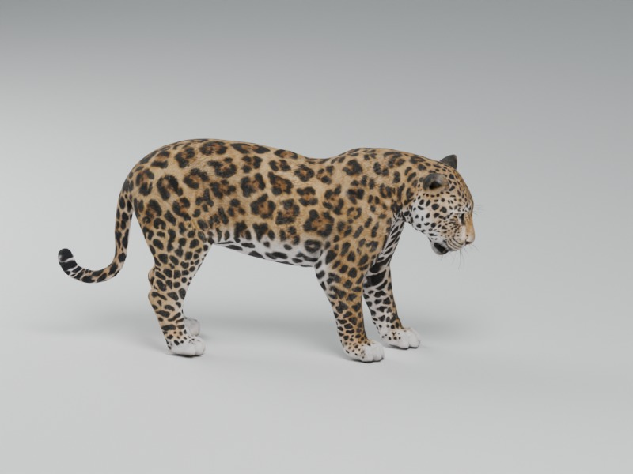
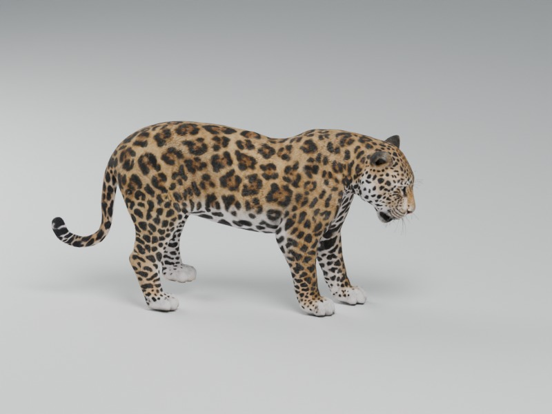
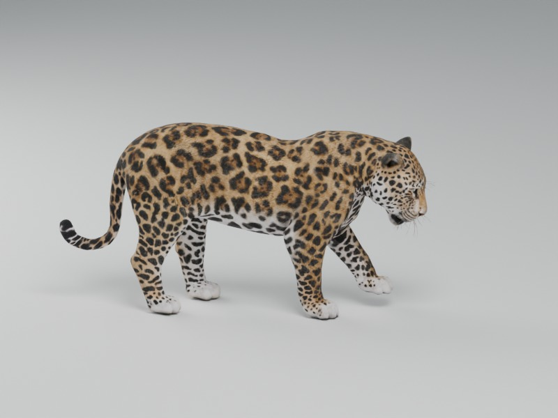
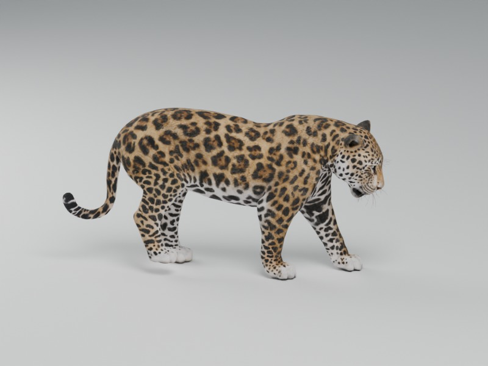
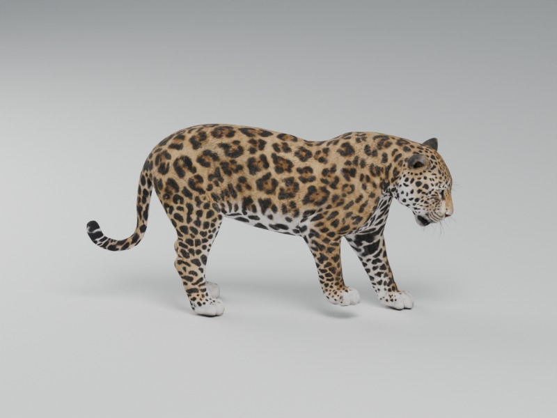
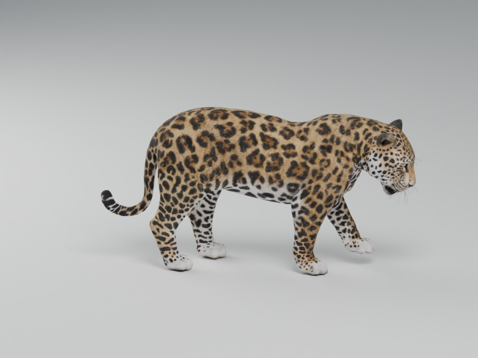
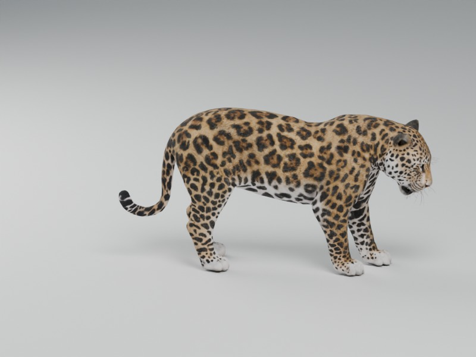

Open archive · Fox jump and preceding studies
Panthera onca · Open interactive study
Two slow four-beat step sequences articulate the retained jaguar skeleton. Each hindpaw advances before the forepaw on the same side; planted paws remain at fixed positions while the trunk advances, with separate swing clearance. Jaguar ethograms establish walking as a behavior; domestic-cat kinematics provide comparative gait context. Joint paths, paw spacing, stride length and nine-second display timing are authored, not measured from a jaguar.
Credited original artist model: original source GLB bytes, UV maps, skin weights and texture images remain unchanged. The existing stretch, single-step and grooming excerpts are retained. This release adds movement; it is not a new scan or skin replacement.







Primary jaguar activity-budget observations distinguish walking from rest. Primary domestic-cat locomotion research documents lateral-sequence walking. The displayed sequence is a comparative reconstruction, not jaguar motion-capture data.
Checks cover original source integrity, retained geometry/materials/UVs/weights, rigid segment lengths, paw support and clearance, fixed stance coordinates, continuous phase boundaries, backwards seeking, finite endpoints and Observe reset. These are software and visual checks, not physiological validation. Dynamic stability, internal physiology, muscle forces, energy and prey handling are not simulated.
188 fully unavailable processes remain across all kingdoms. Partial mechanisms also keep explicit limitations.
| Species | Process | Reason |
|---|---|---|
| Bald eagle | Forage | Prey-search posture and capture need a head, foot and landing rig; flight can be inspected separately. |
| Bald eagle | Rest posture | The previous overlapping wing fold was not a defensible perched posture. A complete folded-wing/leg support rig and perch are still required. |
| Barn owl | Fly | The perched owl scan has folded wings. A flight-capable wing surface and rig are pending. |
| Common octopus | Jet escape — pending | No jetting mechanism; inspect Observe or the separate partial arm studies. |
| Moon jelly | Prey handling — pending | The former generic rig gesture was not feeding and is withdrawn. |
| Sensitive plant | Seed-to-adult development | Developmental geometry and source-by-stage review are pending; misleading mature-model size scaling is disabled. |
| Venus flytrap | Seed-to-adult development | Developmental geometry and source-by-stage review are pending; misleading mature-model size scaling is disabled. |
| Rajah pitcher plant | Seed-to-adult development | Developmental geometry and source-by-stage review are pending; misleading mature-model size scaling is disabled. |
| Ginkgo | Seed-to-adult development | Developmental geometry and source-by-stage review are pending; misleading mature-model size scaling is disabled. |
| Coast redwood | Seed-to-adult development | Developmental geometry and source-by-stage review are pending; misleading mature-model size scaling is disabled. |
| English oak | Seed-to-adult development | Developmental geometry and source-by-stage review are pending; misleading mature-model size scaling is disabled. |
| Sacred lotus | Seed-to-adult development | Developmental geometry and source-by-stage review are pending; misleading mature-model size scaling is disabled. |
| Male fern | Spore-life-cycle development | Developmental geometry and source-by-stage review are pending; misleading mature-model size scaling is disabled. |
| Oyster mushroom | Development (pending) | Unavailable: no species-specific organ/stage or substrate-network development is implemented. The retained mature exterior is not resized as growth. |
| Oyster mushroom | Hyphal extension (pending) | Unavailable: no species-specific organ/stage or substrate-network development is implemented. The retained mature exterior is not resized as growth. |
| Button mushroom | Development (pending) | Unavailable: no species-specific organ/stage or substrate-network development is implemented. The retained mature exterior is not resized as growth. |
| Button mushroom | Hyphal extension (pending) | Unavailable: no species-specific organ/stage or substrate-network development is implemented. The retained mature exterior is not resized as growth. |
| Eccentric sand dollar | Particle capture — pending | This biological mechanism is not implemented; inspect the same reconstruction in Observe. |
| Blue mussel | Filtration — pending | Feeding, radular contact, particle capture and fluid/physiological mechanisms are not implemented. |
| European flat oyster | Filtration — pending | Feeding, radular contact, particle capture and fluid/physiological mechanisms are not implemented. |
| Maize | Seed-to-adult development | Developmental geometry and source-by-stage review are pending; misleading mature-model size scaling is disabled. |
| Bread wheat | Seed-to-adult development | Developmental geometry and source-by-stage review are pending; misleading mature-model size scaling is disabled. |
| Asian rice | Seed-to-adult development | Developmental geometry and source-by-stage review are pending; misleading mature-model size scaling is disabled. |
| Barley | Seed-to-adult development | Developmental geometry and source-by-stage review are pending; misleading mature-model size scaling is disabled. |
| English lavender | Seed-to-adult development | Developmental geometry and source-by-stage review are pending; misleading mature-model size scaling is disabled. |
| Rosemary | Seed-to-adult development | Developmental geometry and source-by-stage review are pending; misleading mature-model size scaling is disabled. |
| Spearmint | Seed-to-adult development | Developmental geometry and source-by-stage review are pending; misleading mature-model size scaling is disabled. |
| Sweet basil | Seed-to-adult development | Developmental geometry and source-by-stage review are pending; misleading mature-model size scaling is disabled. |
| White clover | Seed-to-adult development | Developmental geometry and source-by-stage review are pending; misleading mature-model size scaling is disabled. |
| Common daisy | Seed-to-adult development | Developmental geometry and source-by-stage review are pending; misleading mature-model size scaling is disabled. |
| Yarrow | Seed-to-adult development | Developmental geometry and source-by-stage review are pending; misleading mature-model size scaling is disabled. |
| Common foxglove | Seed-to-adult development | Developmental geometry and source-by-stage review are pending; misleading mature-model size scaling is disabled. |
| Bracken | Spore-life-cycle development | Developmental geometry and source-by-stage review are pending; misleading mature-model size scaling is disabled. |
| Field horsetail | Spore-life-cycle development | Developmental geometry and source-by-stage review are pending; misleading mature-model size scaling is disabled. |
| Common liverwort | Spore-life-cycle development | Developmental geometry and source-by-stage review are pending; misleading mature-model size scaling is disabled. |
| Yellow morel | Development (pending) | No species-specific developmental sequence, mycelial network or biochemical decomposition solver is provided. |
| Turkey-tail fungus | Development (pending) | No species-specific developmental sequence, mycelial network or biochemical decomposition solver is provided. |
| Square haloarchaeon | Division — pending | This biological mechanism is not implemented; inspect the same reconstruction in Observe. |
| Inflated sea biscuit | Particle capture — pending | This biological mechanism is not implemented; inspect the same reconstruction in Observe. |
| Common sage | Seed-to-adult development | Developmental geometry and source-by-stage review are pending; misleading mature-model size scaling is disabled. |
| Common thyme | Seed-to-adult development | Developmental geometry and source-by-stage review are pending; misleading mature-model size scaling is disabled. |
| Oregano | Seed-to-adult development | Developmental geometry and source-by-stage review are pending; misleading mature-model size scaling is disabled. |
| Lemon balm | Seed-to-adult development | Developmental geometry and source-by-stage review are pending; misleading mature-model size scaling is disabled. |
| Catnip | Seed-to-adult development | Developmental geometry and source-by-stage review are pending; misleading mature-model size scaling is disabled. |
| Scarlet sage | Seed-to-adult development | Developmental geometry and source-by-stage review are pending; misleading mature-model size scaling is disabled. |
| Woodland sage | Seed-to-adult development | Developmental geometry and source-by-stage review are pending; misleading mature-model size scaling is disabled. |
| French lavender | Seed-to-adult development | Developmental geometry and source-by-stage review are pending; misleading mature-model size scaling is disabled. |
| Anise hyssop | Seed-to-adult development | Developmental geometry and source-by-stage review are pending; misleading mature-model size scaling is disabled. |
| Scarlet beebalm | Seed-to-adult development | Developmental geometry and source-by-stage review are pending; misleading mature-model size scaling is disabled. |
| Common selfheal | Seed-to-adult development | Developmental geometry and source-by-stage review are pending; misleading mature-model size scaling is disabled. |
| Creeping bugle | Seed-to-adult development | Developmental geometry and source-by-stage review are pending; misleading mature-model size scaling is disabled. |
| Lamb’s ear | Seed-to-adult development | Developmental geometry and source-by-stage review are pending; misleading mature-model size scaling is disabled. |
| Motherwort | Seed-to-adult development | Developmental geometry and source-by-stage review are pending; misleading mature-model size scaling is disabled. |
| White deadnettle | Seed-to-adult development | Developmental geometry and source-by-stage review are pending; misleading mature-model size scaling is disabled. |
| Painted nettle | Seed-to-adult development | Developmental geometry and source-by-stage review are pending; misleading mature-model size scaling is disabled. |
| Megaterium bacillus | Division — pending | This biological mechanism is not implemented; inspect the same reconstruction in Observe. |
| Yellow micrococcus | Division — pending | This biological mechanism is not implemented; inspect the same reconstruction in Observe. |
| Common limpet | Particle capture — pending | Feeding, radular contact, particle capture and fluid/physiological mechanisms are not implemented. |
| Antarctic limpet | Particle capture — pending | Feeding, radular contact, particle capture and fluid/physiological mechanisms are not implemented. |
| Volcano keyhole limpet | Particle capture — pending | Feeding, radular contact, particle capture and fluid/physiological mechanisms are not implemented. |
| Red abalone | Algal grazing — pending | Feeding, radular contact, particle capture and fluid/physiological mechanisms are not implemented. |
| European abalone | Algal grazing — pending | Feeding, radular contact, particle capture and fluid/physiological mechanisms are not implemented. |
| Slipper limpet | Filtration — pending | Feeding, radular contact, particle capture and fluid/physiological mechanisms are not implemented. |
| Common cockle | Filtration — pending | Feeding, radular contact, particle capture and fluid/physiological mechanisms are not implemented. |
| Manila clam | Filtration — pending | Feeding, radular contact, particle capture and fluid/physiological mechanisms are not implemented. |
| Hard clam | Filtration — pending | Feeding, radular contact, particle capture and fluid/physiological mechanisms are not implemented. |
| Sword razor shell | Filtration — pending | Feeding, radular contact, particle capture and fluid/physiological mechanisms are not implemented. |
| Soft-shell clam | Filtration — pending | Feeding, radular contact, particle capture and fluid/physiological mechanisms are not implemented. |
| Fan mussel | Filtration — pending | Feeding, radular contact, particle capture and fluid/physiological mechanisms are not implemented. |
| Aloe | Seed-to-adult development | Developmental geometry and source-by-stage review are pending; misleading mature-model size scaling is disabled. |
| Torch aloe | Seed-to-adult development | Developmental geometry and source-by-stage review are pending; misleading mature-model size scaling is disabled. |
| Century plant | Seed-to-adult development | Developmental geometry and source-by-stage review are pending; misleading mature-model size scaling is disabled. |
| Foxtail agave | Seed-to-adult development | Developmental geometry and source-by-stage review are pending; misleading mature-model size scaling is disabled. |
| Zebra haworthia | Seed-to-adult development | Developmental geometry and source-by-stage review are pending; misleading mature-model size scaling is disabled. |
| Cooper’s haworthia | Seed-to-adult development | Developmental geometry and source-by-stage review are pending; misleading mature-model size scaling is disabled. |
| Bicoloured gasteria | Seed-to-adult development | Developmental geometry and source-by-stage review are pending; misleading mature-model size scaling is disabled. |
| Mexican snowball | Seed-to-adult development | Developmental geometry and source-by-stage review are pending; misleading mature-model size scaling is disabled. |
| Molded wax agave | Seed-to-adult development | Developmental geometry and source-by-stage review are pending; misleading mature-model size scaling is disabled. |
| Houseleek | Seed-to-adult development | Developmental geometry and source-by-stage review are pending; misleading mature-model size scaling is disabled. |
| Jade plant | Seed-to-adult development | Developmental geometry and source-by-stage review are pending; misleading mature-model size scaling is disabled. |
| Elephant bush | Seed-to-adult development | Developmental geometry and source-by-stage review are pending; misleading mature-model size scaling is disabled. |
| White stonecrop | Seed-to-adult development | Developmental geometry and source-by-stage review are pending; misleading mature-model size scaling is disabled. |
| Biting stonecrop | Seed-to-adult development | Developmental geometry and source-by-stage review are pending; misleading mature-model size scaling is disabled. |
| Panda plant | Seed-to-adult development | Developmental geometry and source-by-stage review are pending; misleading mature-model size scaling is disabled. |
| Rotating desmid | Division — pending | This biological mechanism is not implemented; inspect the same reconstruction in Observe. |
| Moniliferous desmid | Division — pending | This biological mechanism is not implemented; inspect the same reconstruction in Observe. |
| Botrytis desmid | Division — pending | This biological mechanism is not implemented; inspect the same reconstruction in Observe. |
| Duplex water net alga | Division — pending | This biological mechanism is not implemented; inspect the same reconstruction in Observe. |
| Water net | Division — pending | This biological mechanism is not implemented; inspect the same reconstruction in Observe. |
| Radiation-resistant deinococcus | Division — pending | This biological mechanism is not implemented; inspect the same reconstruction in Observe. |
| Plant-associated lactobacillus | Division — pending | This biological mechanism is not implemented; inspect the same reconstruction in Observe. |
| Thermophilic streptococcus | Division — pending | This biological mechanism is not implemented; inspect the same reconstruction in Observe. |
| Portuguese man-of-war | Particle capture — pending | This biological mechanism is not implemented; inspect the same reconstruction in Observe. |
| By-the-wind sailor | Particle capture — pending | This biological mechanism is not implemented; inspect the same reconstruction in Observe. |
| Blue button | Particle capture — pending | This biological mechanism is not implemented; inspect the same reconstruction in Observe. |
| Garden cosmos | Seed-to-adult development | Developmental geometry and source-by-stage review are pending; misleading mature-model size scaling is disabled. |
| Aztec marigold | Seed-to-adult development | Developmental geometry and source-by-stage review are pending; misleading mature-model size scaling is disabled. |
| Pot marigold | Seed-to-adult development | Developmental geometry and source-by-stage review are pending; misleading mature-model size scaling is disabled. |
| Elegant zinnia | Seed-to-adult development | Developmental geometry and source-by-stage review are pending; misleading mature-model size scaling is disabled. |
| Black-eyed Susan | Seed-to-adult development | Developmental geometry and source-by-stage review are pending; misleading mature-model size scaling is disabled. |
| Purple coneflower | Seed-to-adult development | Developmental geometry and source-by-stage review are pending; misleading mature-model size scaling is disabled. |
| Oxeye daisy | Seed-to-adult development | Developmental geometry and source-by-stage review are pending; misleading mature-model size scaling is disabled. |
| Cornflower | Seed-to-adult development | Developmental geometry and source-by-stage review are pending; misleading mature-model size scaling is disabled. |
| Blanket flower | Seed-to-adult development | Developmental geometry and source-by-stage review are pending; misleading mature-model size scaling is disabled. |
| Plains coreopsis | Seed-to-adult development | Developmental geometry and source-by-stage review are pending; misleading mature-model size scaling is disabled. |
| Jerusalem artichoke | Seed-to-adult development | Developmental geometry and source-by-stage review are pending; misleading mature-model size scaling is disabled. |
| Common tansy | Seed-to-adult development | Developmental geometry and source-by-stage review are pending; misleading mature-model size scaling is disabled. |
| Wormwood | Seed-to-adult development | Developmental geometry and source-by-stage review are pending; misleading mature-model size scaling is disabled. |
| Common chicory | Seed-to-adult development | Developmental geometry and source-by-stage review are pending; misleading mature-model size scaling is disabled. |
| Common dandelion aggregate | Seed-to-adult development | Developmental geometry and source-by-stage review are pending; misleading mature-model size scaling is disabled. |
| Lettuce | Seed-to-adult development | Developmental geometry and source-by-stage review are pending; misleading mature-model size scaling is disabled. |
| Common stinkhorn | Decomposition — pending | This mature fruit-body reconstruction has no working decomposition or spore-dispersal mechanism. |
| Red cage fungus | Decomposition — pending | This mature fruit-body reconstruction has no working decomposition or spore-dispersal mechanism. |
| Dog stinkhorn | Decomposition — pending | This mature fruit-body reconstruction has no working decomposition or spore-dispersal mechanism. |
| Lantern stinkhorn | Decomposition — pending | This mature fruit-body reconstruction has no working decomposition or spore-dispersal mechanism. |
| Anemone stinkhorn | Decomposition — pending | This mature fruit-body reconstruction has no working decomposition or spore-dispersal mechanism. |
| Collared earthstar | Decomposition — pending | This mature fruit-body reconstruction has no working decomposition or spore-dispersal mechanism. |
| Common bird’s nest fungus | Decomposition — pending | This mature fruit-body reconstruction has no working decomposition or spore-dispersal mechanism. |
| Fluted bird’s nest fungus | Decomposition — pending | This mature fruit-body reconstruction has no working decomposition or spore-dispersal mechanism. |
| Goose-necked ciliate | Particle capture — pending | This biological mechanism is not implemented; inspect the same reconstruction in Observe. |
| Inflated colpoda | Particle capture — pending | This biological mechanism is not implemented; inspect the same reconstruction in Observe. |
| Bursaria | Particle capture — pending | This biological mechanism is not implemented; inspect the same reconstruction in Observe. |
| Cholera vibrio | Division — pending | This biological mechanism is not implemented; inspect the same reconstruction in Observe. |
| Golden staphylococcus | Division — pending | This biological mechanism is not implemented; inspect the same reconstruction in Observe. |
| Scots pine | Seed-to-tree development (pending) | Full species-specific seed-to-tree organ development remains unavailable; this control does not resize an already mature crown. |
| Stone pine | Seed-to-tree development (pending) | Full species-specific seed-to-tree organ development remains unavailable; this control does not resize an already mature crown. |
| Norway spruce | Seed-to-tree development (pending) | Full species-specific seed-to-tree organ development remains unavailable; this control does not resize an already mature crown. |
| Norway spruce | Cone maturation/release (pending) | Complete species-specific reproductive mechanism and natural timing remain pending. |
| European silver fir | Seed-to-tree development (pending) | Full species-specific seed-to-tree organ development remains unavailable; this control does not resize an already mature crown. |
| European silver fir | Cone maturation/release (pending) | Complete species-specific reproductive mechanism and natural timing remain pending. |
| European larch | Full development (pending) | Complete germination, juvenile organs and reproduction remain unavailable; whole mature-form size scaling is blocked. |
| Cedar of Lebanon | Full development (pending) | Complete germination, juvenile organs and reproduction remain unavailable; whole mature-form size scaling is blocked. |
| European yew | Full development (pending) | Complete germination, juvenile organs and reproduction remain unavailable; whole mature-form size scaling is blocked. |
| Common juniper | Full development (pending) | Complete germination, juvenile organs and reproduction remain unavailable; whole mature-form size scaling is blocked. |
| Mediterranean cypress | Full development (pending) | Complete germination, juvenile organs and reproduction remain unavailable; whole mature-form size scaling is blocked. |
| Northern white cedar | Full development (pending) | Complete germination, juvenile organs and reproduction remain unavailable; whole mature-form size scaling is blocked. |
| Dawn redwood | Full development (pending) | Complete germination, juvenile organs and reproduction remain unavailable; whole mature-form size scaling is blocked. |
| Norfolk Island pine | Full development (pending) | Complete germination, juvenile organs and reproduction remain unavailable; whole mature-form size scaling is blocked. |
| Sago cycad | Full development (pending) | Complete germination, juvenile organs and reproduction remain unavailable; whole mature-form size scaling is blocked. |
| Cardboard cycad | Full development (pending) | Complete germination, juvenile organs and reproduction remain unavailable; whole mature-form size scaling is blocked. |
| Joint pine | Full development (pending) | Complete germination, juvenile organs and reproduction remain unavailable; whole mature-form size scaling is blocked. |
| Beefsteak fungus | Decomposition process | Mechanism unavailable; no surrogate animation is enabled. |
| Sulphur polypore | Decomposition (pending) | No species-specific developmental sequence, mycelial network or biochemical decomposition solver is provided. |
| Dryad’s saddle | Decomposition process | Mechanism unavailable; no surrogate animation is enabled. |
| Splitgill | Decomposition process | Mechanism unavailable; no surrogate animation is enabled. |
| Cauliflower fungus | Decomposition process | Mechanism unavailable; no surrogate animation is enabled. |
| Lion’s mane fungus | Decomposition process | Mechanism unavailable; no surrogate animation is enabled. |
| Wood hedgehog | Decomposition process | Mechanism unavailable; no surrogate animation is enabled. |
| Jelly tooth | Decomposition process | Mechanism unavailable; no surrogate animation is enabled. |
| Pinnularia viridis | Cell division | Mechanism unavailable; no surrogate animation is enabled. |
| Asterionella formosa | Cell division | Mechanism unavailable; no surrogate animation is enabled. |
| Tabellaria flocculosa | Cell division | Mechanism unavailable; no surrogate animation is enabled. |
| Melosira varians | Cell division | Mechanism unavailable; no surrogate animation is enabled. |
| Rhodospirillum rubrum | Motility mechanism | Mechanism unavailable; no surrogate animation is enabled. |
| Borrelia burgdorferi | Motility mechanism | Mechanism unavailable; no surrogate animation is enabled. |
| Dead man's fingers | Developmental process | No developmental mechanism is implemented; no mature-body resizing surrogate. |
| Candlesnuff fungus | Developmental process | No developmental mechanism is implemented; no mature-body resizing surrogate. |
| Killer whale (orca) | Feeding mechanism | Prey/flow/contact mechanism is incomplete; no swimming or jaw-loop substitute is labelled as feeding. |
| Whale shark | Feeding mechanism | Prey/flow/contact mechanism is incomplete; no swimming or jaw-loop substitute is labelled as feeding. |
| White shark | Feeding mechanism | Prey/flow/contact mechanism is incomplete; no swimming or jaw-loop substitute is labelled as feeding. |
| Jaguar | Prey handling | No complete prey acquisition/handling/ingestion mechanism; grooming is not labelled as feeding. |
| Jaguar | Rest / sleep mechanism | Supported repose and sleep physiology are not implemented; standing is not relabelled as rest. |
| Cheetah | Run / gallop | Walking is not relabelled as galloping; complete sprint mechanism absent. |
| Cheetah | Hunt / prey handling | Head-turn study is not hunting, feeding or ingestion. |
| Cheetah | Rest / sleep | The asymmetric artist pose is not labelled rest; sleep physiology is absent. |
| Sperm whale | Prey handling | Feeding anatomy, prey interaction and full mechanics remain unfinished. |
| North Atlantic right whale | Prey handling | Feeding anatomy, prey interaction and full mechanics remain unfinished. |
| Southern right whale | Prey handling | Feeding anatomy, prey interaction and full mechanics remain unfinished. |
| North Pacific right whale | Prey handling | Feeding anatomy, prey interaction and full mechanics remain unfinished. |
| Pygmy right whale | Feeding physiology | Feeding anatomy, prey interaction and full mechanics remain unfinished. |
| Sei whale | Feeding physiology | Feeding anatomy, prey interaction and full mechanics remain unfinished. |
| Common minke whale | Feeding physiology | Feeding anatomy, prey interaction and full mechanics remain unfinished. |
| Antarctic minke whale | Feeding physiology | Feeding anatomy, prey interaction and full mechanics remain unfinished. |
| Rice's whale | Feeding physiology | Feeding anatomy, prey interaction and full mechanics remain unfinished. |
| Bryde’s / Eden’s whale | Feeding physiology | Feeding anatomy, prey interaction and full mechanics remain unfinished. |
| Omura's whale | Feeding physiology | Feeding anatomy, prey interaction and full mechanics remain unfinished. |
| Long-finned pilot whale | Feeding physiology | Feeding anatomy, prey interaction and full mechanics remain unfinished. |
| Short-finned pilot whale | Prey handling | Feeding anatomy, prey interaction and full mechanics remain unfinished. |
| Pygmy sperm whale | Prey handling | Feeding anatomy, prey interaction and full mechanics remain unfinished. |
| Risso's dolphin | Feeding physiology | Feeding anatomy, prey interaction and full mechanics remain unfinished. |
| Amazon river dolphin | Feeding physiology | Feeding anatomy, prey interaction and full mechanics remain unfinished. |
| Spinner dolphin | Feeding physiology | Feeding anatomy, prey interaction and full mechanics remain unfinished. |
| Striped dolphin | Feeding physiology | Feeding anatomy, prey interaction and full mechanics remain unfinished. |
| Irrawaddy dolphin | Feeding physiology | Feeding anatomy, prey interaction and full mechanics remain unfinished. |
| Cuvier's beaked whale | Prey handling | Feeding anatomy, prey interaction and full mechanics remain unfinished. |
| Northern bottlenose whale | Feeding physiology | Feeding anatomy, prey interaction and full mechanics remain unfinished. |
| Blainville's beaked whale | Feeding physiology | Feeding anatomy, prey interaction and full mechanics remain unfinished. |
| Dwarf sperm whale | Feeding physiology | Feeding anatomy, prey interaction and full mechanics remain unfinished. |